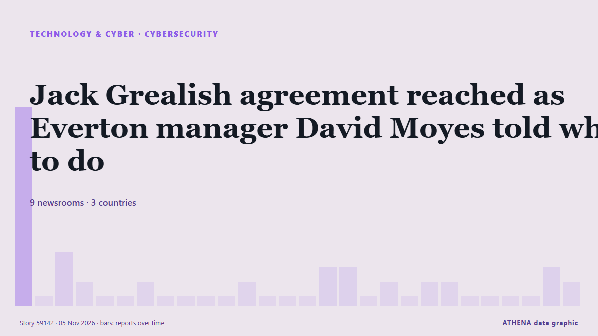

Technology, AI & Cybersecurity
SponsoredPresented by  Cybernetics and Artificial Intelligence Lab Welcome to the Cybernetics and Artificial Intelligence Laboratory, established at the Department of Business Administration of the National and Kapodistrian University of Athens. The lab is headed by Professor Dimitrios Thomakos. The lab aims to do research that can be published in top venues. Our research uses tools and methods of Artificial Intelligence, and lies in the following areas: - Forecasting - Decision making - Cyber security - Finance We are always looking forward to collaborating with exceptional students!
Cybernetics and Artificial Intelligence Lab Welcome to the Cybernetics and Artificial Intelligence Laboratory, established at the Department of Business Administration of the National and Kapodistrian University of Athens. The lab is headed by Professor Dimitrios Thomakos. The lab aims to do research that can be published in top venues. Our research uses tools and methods of Artificial Intelligence, and lies in the following areas: - Forecasting - Decision making - Cyber security - Finance We are always looking forward to collaborating with exceptional students!

CybersecurityJack Grealish agreement reached as Everton manager David Moyes told what to do
Jack Grealish has missed the last three Everton games after breaching club discipline and David Moyes has been told how to deal with the winger. from Liverpool Echo
| 23 Oct | 55 |
|---|---|
| 24 Oct | 21 |
| 25 Oct | 26 |
| 26 Oct | 78 |
| 27 Oct | 84 |
| 28 Oct | 88 |
| 29 Oct | 89 |
| 30 Oct | 80 |
| 31 Oct | 34 |
| 1 Nov | 47 |
| 2 Nov | 109 |
| 3 Nov | 97 |
| 4 Nov | 73 |
| 5 Nov | 23 |
Google turns off AI for schoolchildren by default
Google has said it will switch off its AI tools for schoolchildren by default, after drawing criticism for pushing artificial intelligence features to students while schools are still debating how… from Vanguard
Democrats Prepare Musk Probe Over Satellite Cuts
Senate Democrats have asked Elon Musk to preserve documents concerning the slowdown of Starshield in Ukraine, CNN reported. from Kyiv Post
‘Godfather of AI’ Warns of ‘Chernobyl-Like’ AI Crisis Soon
Geoffrey Hinton, a Nobel Prize-winning computer scientist widely regarded as one of the pioneers of artificial intelligence, has warned that AI could trigger a Chernobyl-like crisis in the near… from Khaama Press
Nasa's 22-year-old Swift satellite telescope falls from orbit in fiery finale
WASHINGTON: Nasa’s Swift satellite telescope, which spent two decades studying the most powerful known blasts of energy in the cosmos, tumbled out of orbit as expected on Wednesday and burned up in… from New Straits Times
National Blood Centre says raise guard after France cyber attacks on blood banks
(ANSA) - ROME, 04 NOV - Italy's National Blood Centre on Wednesday called on Italian blood banks to raise their level of vigilance following cyber attacks in France that targeted the refrigeration… from ANSA English
Musk’s Tesla, SpaceX slide as Democrats take control of Congress
Tesla shares drop 2.6% and SpaceX slides 2.1% in early trading as Musk-backed Republicans lose Texas Senate and governor’s races. from Anadolu Agency (English)
S. Korea posts record high current account surplus of over US$60 bln in Sept. on chip supercycle
SEOUL, Nov. 5 (Yonhap) -- South Korea posted an all-time high current account su... from Yonhap (English)
NASA's Swift space telescope plunges back to Earth in fiery demise
NASA's Swift orbital observatory fell back to Earth after running its mission for more than two decades. from DW English
Chainalysis discloses data breach from "offensive agentic techniques"
Blockchain analytics firm Chainalysis disclosed a data breach after attackers used "offensive agentic techniques" to access internal systems and tools, exposing customer names, email addresses, user… from BleepingComputer
Missed calls puzzle Telstra customers
Telstra says a hack or cyber breach is not to blame for customers receiving mystery missed calls. from Sydney Morning Herald
British adventurer Karl Bushby completes 28-year walk around the world
On November 2, Karl Bushby finished his 28-year walk back to his English hometown of Hull. from NBC News (World)
Want an iPhone Duo for the holidays? Apple’s latest stock update isn’t reassuring
The iPhone Duo likely won’t make it into Santa’s sleigh this year. from ZDNet
Google AI chatbot may break press copyright rules: EU legal adviser
Google’s AI chatbot Gemini may infringe press copyright rules by reusing published content to generate answers, as highlighted by an EU legal adviser in a landmark case involving Hungarian publisher… from IOL
Cyberattack hits French blood banks
Three blood banks have detected and reversed a potentially destructive temperature spike in their cold rooms, following a cyberattack that targeted a refrigeration equipment provider of the French… from Help Net Security
Google dismantles botnet secretly running on 1.3 million Android TV boxes
Google has cut ties with the company behind the botnet campaign. from Ars Technica
Nvidia orders data centre clients to reduce China exposure
World’s biggest chipmaker tells cloud computing providers a majority of their clients must be non-Chinese. from Financial Times - Global economy
OpenAI hires former US Army Secretary Dan Driscoll for national security
OpenAI has hired Dan Driscoll, the 26th Secretary of the US Army, the company said on Monday. from The Next Web
UK Must Expect AI-Powered Attack on Critical Infrastructure Within Two Years: Report
Britain should be prepared for an AI-powered cyberattack on its critical national infrastructure in the next two years, the UK’s National Cyber Security Centre said on Tuesday, adding that China was… from Insurance Journal
Here's what to know about another cyberattack on European supermarket fridges
Experts say outdated technology and weak passwords are to blame. from PBS NewsHour
Drax plans a £20B AI data centre at Britain’s largest power station
Drax runs Britain’s largest power station, in North Yorkshire. from The Next Web
(LEAD) Lee orders review for establishment of cybersecurity task force
SEOUL, Nov. 3 (Yonhap) -- President Lee Jae Myung on Tuesday instructed official... from Yonhap (English)
Alibaba partners with Apple to integrate Qwen AI model into Apple Intelligence for Chinese market
Feature to launch with official iOS 27.3 release in December. from Anadolu Agency (English)
Anthropic Reports $17 Billion Quarterly Revenue Ahead of IPO
Anthropic’s revenue reached $17 billion for the three months ended Sept. from PYMNTS
Supermarket freezers in several European countries hit by apparent cyberattacks
Supermarkets in Sweden, Belgium, Luxembourg, Ireland and Estonia were hit Monday by problems with freezers and fridges that apparently were caused by cyberattacks, forcing some to dispose of ruined… from The Canadian Press (via CityNews)
Europe on alert after supermarket freezers hit by cyber-attacks in 10 countries
Supermarkets have reported problems from Estonia and Sweden to Portugal and Italy and many retainers have been forced to discard food. from BBC News
OpenAI launches 'Grid Protectors Program' to reduce data center electricity demand when the US grid is under strain
As company looks to avoid the anti-data center local pushback. from Data Center Dynamics
Fridge cyberattack hits supermarkets across Europe
Grocery stores in at least five European countries saw temperatures in their cold cases soar on Monday, with several confirming they had been hit by a cyberattack similar to one three weeks ago in… from Dawn
South Korea Investigates Online Leak of President's Passport Details
Personal information of 168 people, including Lee Jae Myung, posted on website. from Anadolu Agency (English)
Elon Musk says 'unsustainably high' costs are the reason for Grok Bot usage limits
The SpaceX CEO said the cost of serving the AI agent was "unsustainably high relative to revenue," after some users complained about usage limits. from Business Insider
Germany Says Lawmakers’ Phones May Be Hacked By Spyware
Apple sent threat alerts to German MPs and officials, and Berlin says affected iPhones should be treated as compromised in a suspected state-backed attack. from to vima
Greek butcher shop reports cyberattack targeting refrigeration systems
Hackers allegedly gain access to refrigeration control system, set the temperature to 302F. from Anadolu Agency (English)
Suspected cyberattack sends Swedish supermarket freezers to 50C
The temperature of freezers at several Swedish grocery stores rose sharply overnight, operators ICA and Coop said on Monday, with at least one store blaming the incident on a cyberattack. from Cyprus Mail
ADNOC becomes first energy company to deploy OpenAI Frontier in landmark deal with G42
Announced at ADIPEC 2026 in Abu Dhabi, the partnership aims to value crude before extraction and slash oilfield planning times from months to hours. from Arabian Business
Hackers hit Ukraine, Russia's emergency apps, send fake nuclear, chemical attack alerts
All-clear messages were sent shortly afterward for each alert, and Ukraine's Ministry for Digital Transformation said the app had been temporarily suspended. from The Jerusalem Post